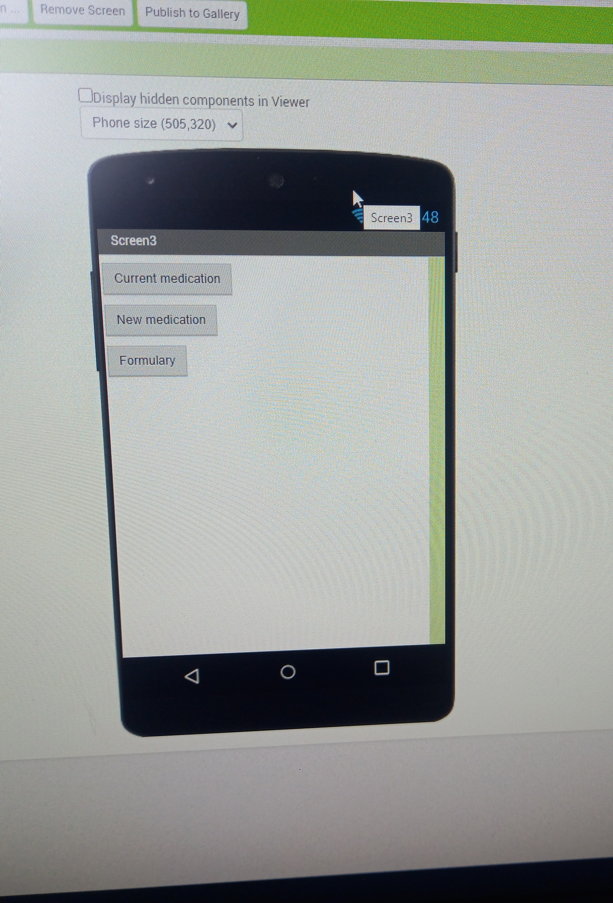

Creating an app with mit app inventor( prescribing Medication
Creating an application for a hospital management system assignment can seem daunting, but with the right guidance, it can be a straightforward process. Here are some clear instructions on how to create such an application:
this was the question:
Step 1: On Screen 1, add an image for users to see how to add an image. If you don't want to include an image, skip this step. To make the user go to Screen 2 when the image is clicked, go to the Blocks section on the top right side of the screen and click it.
Step 2: To add instructions, go to the Blocks section on the left side of your screen. Click Control, scroll down, and drag the block (Open Another Screen Screen Name Screen Name 1) to the center of the screen. Since you created an image, click on the image logo that appears on the left-hand side of the block screen (in your case, Image 1). When a pop-up appears, scroll to the top of the screen and drag and drop the block that reads (When Image1.click do). Merge it with (Open Another Screen Screen Name Screen2).
your blocks should look like this:
Step 3: On Screen 2, drag a text box from the user interface to the viewer (main screen). Go to the Properties section and on the text field, write "Patient Records." Then, untick the Enabled box and tick the Text Only box (this is to ensure the user does not manipulate the text). Next, add another button and name it "Medication Field." Adjust the width and height to your liking.
Step 4: To make the user go to the next screen (which should be Screen 3 and added beforehand), go to the Blocks section, tap Button 2 (Medication Field), and on the pop-up, drag and drop the block that reads (When Button 1.click do). Then, go to Control, click Control, and scroll down to drag the (Open Another Screen Screen Name Screen Name 1) block to the center of the screen. Merge it with (Open Another Screen Screen Name Screen3). your block should look like this 
Step 5: On Screen 3, add three buttons: Current Medication, New Medication, and Formulary. your screen will look like this 
your blocks will look like this
step 6:wring in progress... for screen 4 to 10 check back later
By following these steps, you can create an application for a hospital management system assignment. Make sure to take your time and follow each step carefully to ensure your application works smoothly.